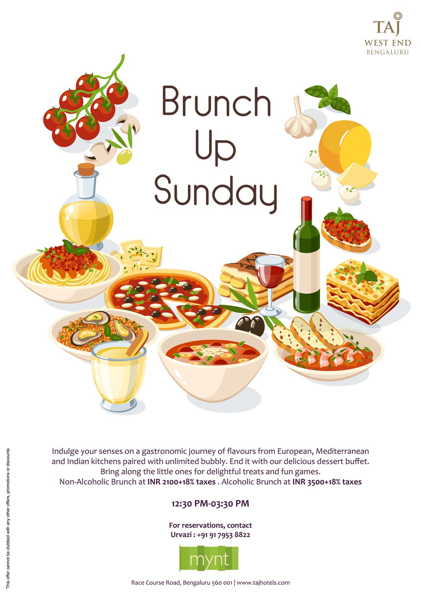
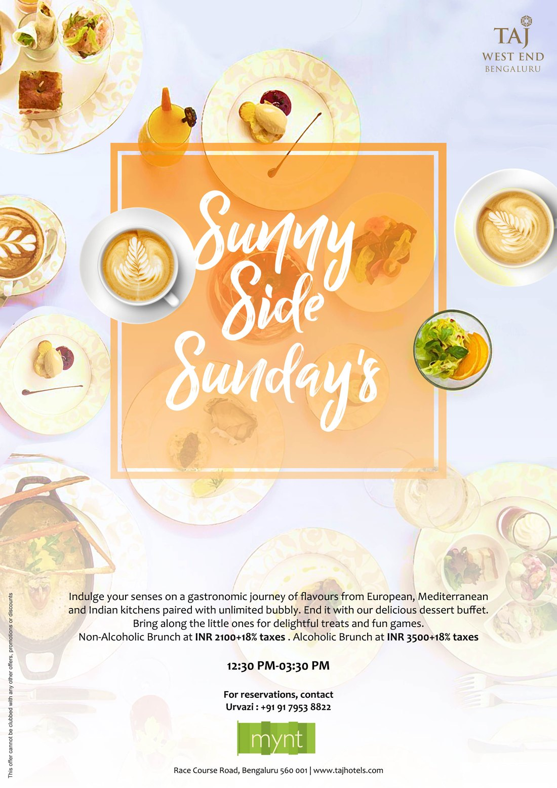
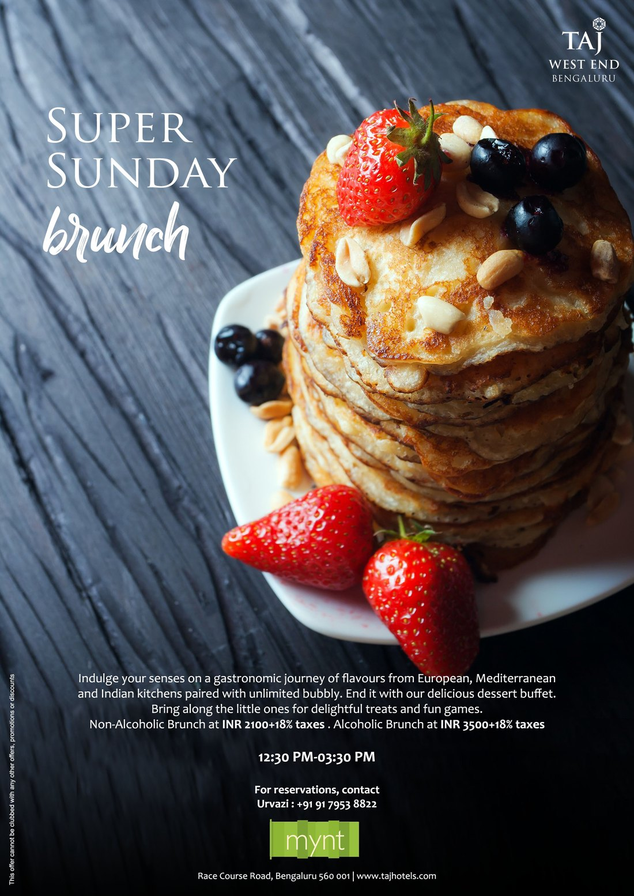

02The Routes




A weekend campaign for Mynt at the Taj West End, Bengaluru — a single Sunday-brunch offer dressed several ways: flat illustration, overhead photography, and a bright typographic mark. One offer, many moods.
Mynt runs a Sunday brunch — European, Mediterranean and Indian kitchens, unlimited bubbly, a dessert buffet. The brief was a poster campaign to sell it week to week, and the work treats that one offer as a set of routes rather than a single fixed lockup.
Illustration, photography and a playful display mark each carry the same details — time, price, the Mynt logo — so the kitchen can pick the mood that suits the week and the brand still reads as one voice.



Illustration to set a mood; photography to make you hungry.
The illustrated route keeps it light and graphic — a flat spread of pasta, pizza and bubbly under a hand-drawn headline. The photographic route does the opposite, leaning on real food shot from overhead and close in, with the type pulled back so the plate does the selling.
Alongside the steady "Brunch Up Sunday" line, the campaign tries a few names on for size — "Sunny Side Sundays", "Super Sunday" — each with its own display treatment, so a recurring offer never looks like the same poster twice.